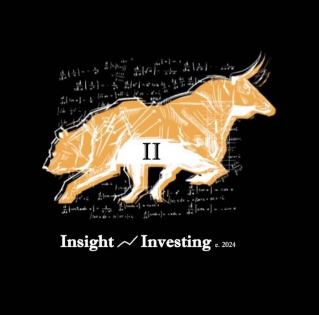

🌍
Makro
Zinsen, Konjunktur, Sektorrotation – und was das konkret für deutsche Nebenwerte bedeutet.
Kostenloser Newsletter · Makro · Aktien · Musterdepot
Ich zeige dir Schritt für Schritt, wie ich Unternehmen bewerte – von der Bilanz bis zum Kursziel. Ehrlich, nachvollziehbar und ohne Hype.
Jeden Montag · Kein Spam · Jederzeit kündbar
Was du bekommst
Zinsen, Konjunktur, Sektorrotation – und was das konkret für deutsche Nebenwerte bedeutet.
Ein Unternehmen pro Woche, analysiert wie im Profi-Research – mit Zahlen, Annahmen und Risiken.
Ein eigenes Depot mit festem Regelwerk – unabhängig vom Wikifolio, jede Änderung begründet.
Was im Wikifolio PerceptiveInvesting gekauft und verkauft wurde – und warum. Auch wenn ich danebenliege.
Mein Prozess
Welche Unternehmen sind überhaupt einen zweiten Blick wert?
Geschäftsmodell, Markt, Management – was treibt den Wert?
Szenarien, DCF und Vergleichsbewertung statt Bauchgefühl.
These laufend gegen die Realität testen – und Fehler offen benennen.
Angebot
0 €
Der kostenlose Newsletter – jeden Montag.
7,99 € / Monat
oder 79 € / Jahr – Gründerpreis, dauerhaft für die ersten 100 Mitglieder von der Warteliste. Danach regulär 12,99 € / Monat bzw. 129 € / Jahr.
Abonnent:innen von Insight Weekly sind automatisch auf der Warteliste.

Über InsightInvesting
Hinter InsightInvesting steht professionelle Erfahrung aus Research und Portfoliomanagement mit Fokus auf deutsche Nebenwerte. Hier wird geteilt, wie Aktien in der Praxis analysiert werden – praxisnah, ehrlich und ohne Fachchinesisch.
Das zugehörige Wikifolio PerceptiveInvesting ist öffentlich – du kannst also jederzeit sehen, ob die Analysen etwas taugen.
FAQ
Ja. Insight Weekly bleibt kostenlos. Wer tiefer einsteigen will, kann später optional Insight Pro buchen.
Für alle, die verstehen wollen, wie Aktienbewertung in der Praxis funktioniert – Grundkenntnisse helfen, sind aber keine Voraussetzung.
Nein. Die Inhalte dienen der Information und Bildung und sind keine Anlageberatung. Jede Anlageentscheidung triffst du selbst.
Das Wikifolio PerceptiveInvesting ist öffentlich auf wikifolio.com handelbar und wird aktiver gemanagt. Das Musterdepot ist davon unabhängig, folgt einem festen, langfristigen Regelwerk und dient vor allem dazu, Entscheidungen nachvollziehbar zu machen.
Insight Pro startet in den nächsten Monaten. Alle Abonnent:innen von Insight Weekly erfahren es zuerst und erhalten den Gründerpreis von 7,99 € pro Monat oder 79 € pro Jahr – dauerhaft für die ersten 100 Mitglieder. Danach kostet Insight Pro regulär 12,99 € pro Monat bzw. 129 € pro Jahr. Monatlich kündbar.
Am selben Tag – immer erst nach Ausführung im Wikifolio, mit Zeitstempel und Begründung. So bleibt jeder Trade transparent und überprüfbar.
Jederzeit mit einem Klick – der Abmeldelink steht in jeder E-Mail.